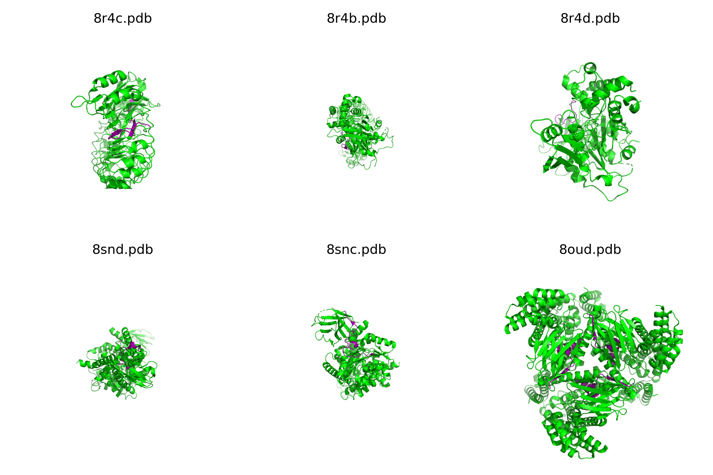

written by Eric J. Ma on 2024-05-16 | tags: pymol jupyter notebooks python scripting protein visualization pdb files data science gpt-4 matplotlib plotting bioinformatics automation
In this blog post, I share my journey of learning to script PyMOL directly from Jupyter notebooks, a skill I picked up with the help of GPT-4. I detail the process of installing PyMOL, setting up the environment, and scripting to process and visualize protein structures, specifically nanobody VHH structures. I also demonstrate how to plot these structures in a grid using matplotlib. But the more important lesson here is how quickly I was able to pick it up, thanks to GPT-4! Are you able to leverage LLMs as a skill-learning hack?
For a small request at work, I recently learned how to control PyMOL from Jupyter notebooks, specifically to script it without leaving the Jupyter notebook UI, and I thought it was pretty good! Here's how we do it.
We first need to ensure that we have PyMOL-open-source installed on our environment:
mamba install pymol-open-source
This gives us the pymol package, which we can import:
import pymol from pymol import cmd
Suppose we have a collection of PDB files, say of nanobody VHH structures:
from pathlib import Path vhh_pdb_files = list(Path(".").glob("*.pdb"))
Using the PyMOL package alongside the built-in os package, we can now define two helper functions:
import os from pathlib import Path def setup_PyMOL(): # may need to do `sudo apt-get install xvfb` if not available os.system("Xvfb :99 &") os.environ["DISPLAY"] = ":99" PyMOL.finish_launching(['PyMOL', '-c']) def process_pdb(pdb_path: Path): cmd.load(pdb_path, "protein_structure") cmd.hide("everything", "protein_structure") cmd.show("cartoon", "protein_structure") cmd.color("green", "protein_structure") # Select and color the CDRH3 region in purple # CDRH3 region: residues 105 to 118 (inclusive) cmd.select("CDRH3", "protein_structure and resi 105-118") cmd.color("purple", "CDRH3") cmd.zoom("protein_structure") cmd.png(f"{pdb_path.with_suffix('.png')}", width=1080, height=1080, dpi=300, ray=1) cmd.delete("all") # Clears the loaded structure for the next one
Finally, we can do a for-loop over PDB files:
from pyprojroot import here from tqdm.auto import tqdm setup_PyMOL() for pdb_path in tqdm(vhh_pdb_files): process_pdb(pdb_path) # Quit PyMOL cmd.quit() # Kill Xvfb os.system("killall Xvfb")
Bonus: I wanted to plot all of the PDB files in a grid.
import matplotlib.pyplot as plt from sqdiv import n_rows_cols num_rows, num_cols = n_rows_cols(len(vhh_pdb_files)) base_size = 3 fig, axes = plt.subplots(nrows=num_rows, ncols=num_cols, figsize=(base_size * num_cols, base_size * num_rows)) for i, pdb_name in enumerate(vhh_pdb_files): ax = axes.flatten()[i] img = plt.imread((Path(pdb_name)).with_suffix(".png")) ax.imshow(img) ax.set_title(pdb_name) # Despine all the spines for each plot for spine in ax.spines.values(): spine.set_visible(False) # Hide ticks ax.set_xticks([]) ax.set_yticks([]) plt.tight_layout()
This gives us an image that looks like this:

The subtext of this post is that GPT-4 is an incredibly useful tool for helping me learn new things.
I haven't had many chances to use PyMOL throughout my career, and even when I did, it was mostly in manual mode to visualize protein structures. Scripting PyMOL wasn't something I tried to do, as this was before I felt proficient with Python, and I wasn't processing more than a handful of structures. However, with modern data science idioms, such as working within a Jupyter notebook for exploratory work, using PyMOL "the old way" would have disrupted my workflow by necessitating a context switch away from notebooks into PyMOL. As such, I wondered if we could control PyMOL through Python code directly.
To discover whether this was possible, my first instincts were that if I could think of this idea, someone smarter than me probably already had thought of it. They probably came up with a solution a few years ahead of me, implying that it should exist within GPT4's training set! My first instinct was to go and ask GPT4 how to do so, which led me to discover the pymol-open-source on the conda-forge channel alongside the code above!
Since scripting PyMOL is a form of programming and since the syntax is usually the hardest to remember, the encoded knowledge within GPT-4's weights is a great way to ramp up my exposure to the syntax quickly. Additionally, since I know that I learn fastest in an applied setting, where I pick up something new en route to doing something I already need to do, prompt-hacking GPT-4 as a personalized tutor is incredibly compatible with how I learn.
@article{
ericmjl-2024-how-to-control-pymol-from-jupyter-notebooks,
author = {Eric J. Ma},
title = {How to control PyMOL from Jupyter notebooks},
year = {2024},
month = {05},
day = {16},
howpublished = {\url{https://ericmjl.github.io}},
journal = {Eric J. Ma's Blog},
url = {https://ericmjl.github.io/blog/2024/5/16/how-to-control-pymol-from-jupyter-notebooks},
}
I send out a newsletter with tips and tools for data scientists. Come check it out at Substack.
If you would like to sponsor the coffee that goes into making my posts, please consider GitHub Sponsors!
Finally, I do free 30-minute GenAI strategy calls for teams that are looking to leverage GenAI for maximum impact. Consider booking a call on Calendly if you're interested!